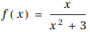
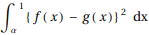
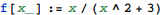
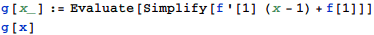
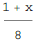
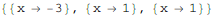
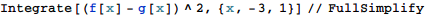
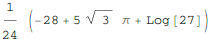

東京大学 2021年 理科 第3問
問題
関数に対して、y=f(x)のグラフをCとする。
点A(1,f(a))におけるCの接戦をl:y=g(x)とする。
(1) Cとlの共有点でAと異なるものがただ1つだけ存在することを示し、その点のx座標を求めよ。
(2) (1)で求めた共有点のx座標をαとする。定積分を計算せよ。
解答
(1)

lはx=1でf(x)と接するから、g(x)は


方程式f(x)=g(x)を解いて

だから、Cとlの共有点でAと異なるものが1つだけ存在し、そのx座標は-3である。
(2)


補足・感想
計算するだけなので特になし。